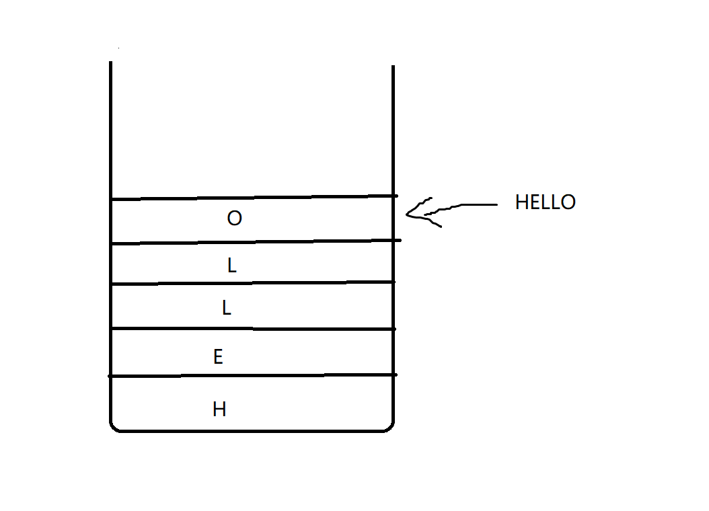
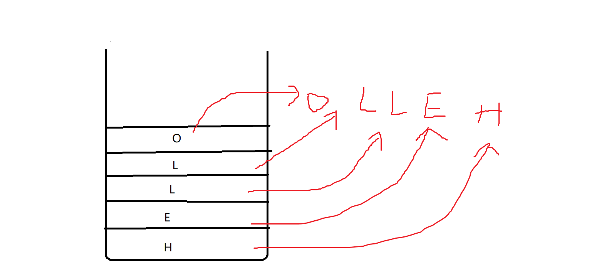

栈
用数组实现栈
C++ #include <iostream>
using namespace std ;
int MAX_SIZE = 10 ; // 定义栈的最大容量
int * Stack = new int [ MAX_SIZE ]; // 动态分配数组空间
int top = -1 ; // 栈顶指针初始化为-1
void push_back ( int n )
{ // 入栈操作
if ( top == MAX_SIZE - 1 )
{ // 如果栈已满，扩容两倍
MAX_SIZE = 2 * MAX_SIZE ;
int * newStack = new int [ MAX_SIZE ]; // 动态分配更大的数组空间
for ( int i = 0 ; i <= top ; i ++ )
{ // 将原数组中的元素复制到新数组中
newStack [ i ] = Stack [ i ];
}
Stack = newStack ; // 将指针指向新数组的首地址
}
top = top + 1 ; // 栈顶指针加1
Stack [ top ] = n ; // 将元素压入栈顶
}
void pop ()
{ // 出栈操作
top = top - 1 ; // 栈顶指针减1
}
bool IsEmpty ()
{ // 判断栈是否为空
if ( top == -1 )
{ // 栈顶指针为-1时，栈为空
return true ;
}
return false ;
}
int top_element ()
{ // 返回栈顶元素
return Stack [ top ];
}
int search ( int n )
{ // 查找元素在栈中的位置
for ( int i = 0 ; i <= top ; i ++ )
{ // 从栈底开始遍历栈中的所有元素
if ( Stack [ i ] == n )
{ // 如果找到指定的元素
return i ; // 返回元素在栈中的位置
}
}
return -1 ; // 否则返回-1
}
int main ( void )
{
// 测试代码
for ( int i = 0 ; i < 200 ; i ++ )
{ // 入栈200个元素
push_back ( i );
}
while ( ! IsEmpty ())
{ // 出栈并输出元素
cout << top_element () << " " ;
pop ();
}
cout << search ( 3 ) << endl ; // 查找元素3在栈中的位置
delete [] Stack ; // 释放动态分配的数组空间
return 0 ;
}
为了更加清晰明了，我写了下面的程序，实现了和上面一样的功能
stack_array_v2.cpp
C++ #include <iostream>
using namespace std ;
class Stack
{
private :
int MAX_SIZE = 10 ; // 定义栈的最大容量
int * Stack = new int [ MAX_SIZE ]; // 动态分配数组空间
int top = -1 ;
public :
void push_back ( int val )
{
if ( top >= MAX_SIZE - 1 )
{
MAX_SIZE *= 2 ;
int * newStack = new int [ MAX_SIZE ];
for ( int i = 0 ; i <= top ; i ++ )
{
newStack [ i ] = Stack [ i ];
}
Stack = newStack ;
}
top ++ ;
Stack [ top ] = val ;
}
void pop ()
{
top -- ;
}
bool is_empty ()
{
return top == -1 ; // 判断栈是否为空
}
int top_element ()
{
return Stack [ top ];
}
int search ( int n )
{ // 查找元素在栈中的位置
for ( int i = 0 ; i <= top ; i ++ )
{ // 从栈底开始遍历栈中的所有元素
if ( Stack [ i ] == n )
{ // 如果找到指定的元素
return i ; // 返回元素在栈中的位置
}
}
return -1 ; // 否则返回-1
}
};
int main ( void )
{
Stack s ;
for ( int i = 0 ; i <= 200 ; i ++ )
{
s . push_back ( i );
}
while ( ! s . is_empty ())
{
cout << s . top_element () << " " ;
s . pop ();
}
return 0 ;
}
用链表实现栈
C++ #include <iostream>
struct Node {
int data ;
Node * next ;
};
class Stack {
private :
Node * top ;
public :
Stack () {
top = nullptr ;
}
void push ( int val ) {
Node * node = new Node ();
node -> data = val ;
node -> next = top ;
top = node ;
}
void pop () {
if ( top != nullptr ) {
Node * node = top ;
top = top -> next ;
delete node ;
}
}
int topVal () {
if ( top != nullptr ) {
return top -> data ;
} else {
return -1 ;
}
}
bool isEmpty () {
return top == nullptr ;
}
};
int main ( void ) {
Stack s ;
for ( int i = 0 ; i < 200 ; i ++ ) {
s . push ( i );
}
while ( ! s . isEmpty ()) {
std :: cout << s . topVal () << std :: endl ;
s . pop ();
}
}
翻转一个字符串或者翻转一个链表(用栈实现)
Reverse a string in default
例如：
hello -> olleh
翻转字符串的常规做法
C++ #include <iostream>
#include <string>
using namespace std ;
void reverse_string ( string & s ) {
int len = s . length ();
for ( int i = 0 ; i < len / 2 ; i ++ ) {
char temp = s [ i ];
s [ i ] = s [ len - i - 1 ];
s [ len - i - 1 ] = temp ;
}
}
int main ( void ) {
string s = "hello" ;
cout << "The valine of s is: " << s << endl ;
reverse_string ( s );
cout << "The reverse result of s is: " << s << endl ;
return 0 ;
}
C++ #include <iostream>
#include <string>
#include <algorithm>
using namespace std ;
int main ( void ) {
string s = "hello" ;
cout << "The valine string value is: " << s << endl ;
s . reverse ( s . begin (), s . end ());
cout << "The reverse string value is: " << s << endl ;
return 0 ;
}
Reverse a string using Stack
我们首先把HELLO这个字符串一个字符一个字符的放入栈中

然后让栈里面的字符从栈顶依次出栈就行了！

下面是代码实现
C++ #include <iostream>
#include <string>
using namespace std ;
class Stack
{
private :
int MAX_SIZE = 5 ;
char * stack = new char [ MAX_SIZE ];
int top = -1 ;
public :
void push_back ( char n )
{
if ( top == MAX_SIZE - 1 )
{
MAX_SIZE *= 2 ;
char * newStack = new char [ MAX_SIZE ];
for ( int i = 0 ; i <= top ; i ++ )
{
newStack [ i ] = stack [ i ];
}
stack = newStack ;
}
top ++ ;
stack [ top ] = n ;
}
char pop ()
{
if ( top == -1 )
{
return '\0' ;
}
else
{
char temp = stack [ top ]; // 存储栈顶元素
top -- ; // 弹出栈顶元素
return temp ; // 返回被弹出的栈顶元素
}
}
};
int main ( void )
{
string s = "hello" ;
Stack stack ;
for ( char c : s ) {
stack . push_back ( c );
}
for ( int j = 0 ; j < s . size (); j ++ )
{
cout << stack . pop ();
}
return 0 ;
}
Reverse a linklist using Stack
让我们想一想我们之前是怎么翻转链表的？
首先，函数判断链表的头部是否为空或只有一个节点，如果是，则无需进行翻转，直接返回。这一步的判断是非常必要的，因为链表为空或只有一个节点时，翻转链表是没有意义的。
接着，函数定义了三个指针变量 cur、prev、next，它们分别指向当前节点、当前节点的前一个节点和当前节点的后一个节点。其中，cur 变量初始化为链表的头部，prev 变量初始化为 NULL。
进入 while 循环，每次将 next 指向当前节点 cur 的下一个节点，然后将 cur 的 next 指针指向 prev，这样就完成了当前节点的翻转。接着，将 prev 指向当前节点 cur，cur 指向下一个节点 next，继续执行下一轮循环。这样不断地执行，直到 cur 指向链表的最后一个节点，此时整个链表就被翻转了。
最后，将链表的头部指向反转后的链表头部 prev，完成链表的翻转操作。
综上所述，您的 Reverse() 函数采用了迭代的方式翻转链表，通过遍历链表，每次将当前节点的 next 指针指向前一个节点，最终完成整个链表的翻转。
C++ #include <iostream>
using namespace std ;
struct Node
{
int data ;
Node * next ;
};
Node * head ;
void Insert ( int num );
void Print ();
void Reverse ();
int main ( void )
{
head = NULL ;
Insert ( 1 );
Insert ( 2 );
Insert ( 3 );
Insert ( 4 );
Insert ( 5 );
Insert ( 6 );
Print ();
cout << "Now we will reverse this linklist!" << endl ;
Reverse ();
Print ();
}
void Insert ( int num )
{
Node * temp = new Node ();
temp -> data = num ;
temp -> next = NULL ;
if ( head == NULL )
{
head = temp ;
}
else
{
Node * cur = head ;
while ( cur -> next != NULL )
{
cur = cur -> next ;
}
cur -> next = temp ;
}
}
void Print ()
{
cout << "The content in linklist:" << endl ;
Node * cur = head ;
while ( cur != NULL )
{
cout << cur -> data << " " ;
cur = cur -> next ;
}
cout << endl ;
}
void Reverse ()
{
if ( head == NULL || head -> next == NULL )
{
cout << "元素数量不足，无法进行翻转!" << endl ;
return ;
}
Node * cur , * prev , * next ;
cur = head ;
prev = NULL ;
while ( cur != NULL )
{
next = cur -> next ;
cur -> next = prev ;
prev = cur ;
cur = next ;
}
head = prev ;
}
那该如何用栈来翻转链表呢？
使用栈可以将链表翻转为逆序，具体步骤如下：
遍历链表，将每个节点的指针依次压入栈中。
弹出栈顶元素，将其指针指向下一个栈顶元素，直到栈为空。
返回链表的新头节点。
C++ #include <iostream>
#include <stack>
using namespace std ;
// 链表节点结构体
struct Node
{
int data ; // 数据
Node * next ; // 指向下一个节点的指针
};
// 链表类
class LinkList
{
public :
Node * head = nullptr ; // 链表的头节点
// 在链表末尾插入一个节点
void Insert ( int val )
{
Node * temp = new Node (); // 创建新节点
temp -> data = val ; // 设置新节点的数据
temp -> next = nullptr ; // 新节点的下一个节点指针为nullptr
if ( head == nullptr ) // 如果链表为空
{
head = temp ; // 将新节点设置为头节点
return ;
}
else // 如果链表不为空
{
Node * cur = head ;
while ( cur -> next != nullptr ) // 遍历链表找到最后一个节点
{
cur = cur -> next ;
}
cur -> next = temp ; // 将新节点连接到最后一个节点的后面
}
}
// 打印链表中的所有元素
void Print ()
{
Node * cur = head ;
while ( cur != nullptr )
{
cout << cur -> data << " " ;
cur = cur -> next ;
}
}
// 将链表逆序
void Reverse ()
{
stack < Node *> s ; // 创建一个栈，用来存储链表中的所有节点
Node * cur = head ;
while ( cur != nullptr ) // 将链表中的所有节点都压入栈中
{
s . push ( cur );
cur = cur -> next ;
}
head = s . top (); // 将栈顶元素设置为链表的新头节点
s . pop ();
cur = head ; // 遍历链表，将栈中的节点依次弹出并连接起来
while ( ! s . empty ())
{
cur -> next = s . top ();
s . pop ();
cur = cur -> next ;
}
cur -> next = nullptr ; // 最后一个节点的下一个节点指针为nullptr
}
};
int main ( void )
{
LinkList l ; // 创建一个链表对象
// 向链表中插入元素
l . Insert ( 1 );
l . Insert ( 2 );
l . Insert ( 3 );
l . Insert ( 4 );
l . Insert ( 5 );
l . Insert ( 6 );
l . Insert ( 7 );
// 打印原始链表
l . Print ();
cout << endl ;
// 将链表逆序
l . Reverse ();
// 打印逆序后的链表
l . Print ();
cout << endl ;
return 0 ;
}
用栈检查括号是否匹配
C++ #include <iostream>
#include <stack>
#include <string>
// 括号匹配函数
bool paren ( const std :: string & input )
{
std :: stack < char > s ;
for ( const char c : input )
{
// 左括号入栈
if ( c == '(' || c == '[' || c == '{' )
{
s . push ( c );
continue ;
}
// 右括号匹配
if ( s . empty () ||
( c == ')' && s . top () != '(' ) ||
( c == '}' && s . top () != '{' ) ||
( c == ']' && s . top () != '[' ))
{
return false ;
}
// 匹配成功，弹出左括号
s . pop ();
}
// 判断栈是否为空
return s . empty ();
}
int main ()
{
const std :: string input1 = "({[]})" ;
const std :: string input2 = "({[})" ;
std :: cout << std :: boolalpha << paren ( input1 ) << '\n' ;
std :: cout << std :: boolalpha << paren ( input2 ) << '\n' ;
/*
std::boolalpha 是一个 std::ios 标志，用于指示流输出布尔值时使用文字形式输出，即将 true 输出为 "true"，将 false 输出为 "false"。
默认情况下，流输出布尔值时使用整数形式输出，即将 true 输出为 1，将 false 输出为 0。如果需要输出文字形式，可以使用 std::boolalpha 标志。
在代码中，std::cout << std::boolalpha << paren(input1) << '\n'; 表示将 std::boolalpha 标志应用到 std::cout 流上，以确保输出的布尔值使用文字形式。
*/
return 0 ;
}
这段代码实现了一个括号匹配的函数 paren，用于判断一个由括号组成的字符串中的括号是否匹配。
函数 paren 接受一个字符串 input 作为输入，使用一个栈 s 对每个左括号进行入栈操作，并在遇到右括号时进行匹配操作。具体来说，当遇到左括号时，将其压入栈中；当遇到右括号时，判断栈顶元素是否与该右括号匹配，如果匹配则弹出栈顶元素，否则返回 false。
在函数结束时，判断栈是否为空，如果为空则返回 true，否则返回 false。
在 main 函数中，声明了两个字符串 input1 和 input2，分别为 "({[]})" 和 "({[})"。然后分别调用 paren 函数，并将返回值输出到标准输出流中。
std::boolalpha 标志用于指示流输出布尔值时使用文字形式输出，即将 true 输出为 "true"，将 false 输出为 "false"。这样可以使输出更加直观。
最后返回 0，表示程序正常退出。
什么是前缀，中缀，后缀
https://zhuanlan.zhihu.com/p/37467928
学习这里建议看三哥得课
https://www.bilibili.com/video/BV1Fv4y1f7T1?p=21&spm_id_from=pageDriver&vd_source=f7d0ce024b059d57a0319d78217fa104
19-22 就是讲这些得，其中有伪代码
中缀表达式转后缀表达式：
GPT写的
C++ #include <iostream>
#include <stack>
#include <unordered_map>
#include <vector>
#include <sstream>
#include <algorithm>
bool isOperator ( const std :: string & token )
{
static const std :: unordered_map < std :: string , int > operators = {
{ "+" , 1 },
{ "-" , 1 },
{ "*" , 2 },
{ "/" , 2 },
{ "%" , 2 },
{ "^" , 3 }
};
return operators . count ( token ) > 0 ;
}
bool isOperand ( const std :: string & token )
{
return ! isOperator ( token ) && token != "(" && token != ")" ;
}
int precedence ( const std :: string & op )
{
static const std :: unordered_map < std :: string , int > operators = {
{ "+" , 1 },
{ "-" , 1 },
{ "*" , 2 },
{ "/" , 2 },
{ "%" , 2 },
{ "^" , 3 }
};
return operators . at ( op );
}
std :: vector < std :: string > infixToPostfix ( const std :: vector < std :: string >& infix )
{
std :: stack < std :: string > s ;
std :: vector < std :: string > postfix ;
for ( const auto & token : infix ) {
if ( isOperand ( token )) {
postfix . push_back ( token );
} else if ( token == "(" ) {
s . push ( token );
} else if ( token == ")" ) {
while ( ! s . empty () && s . top () != "(" ) {
postfix . push_back ( s . top ());
s . pop ();
}
if ( s . empty ()) {
throw std :: runtime_error ( "Unmatched parenthesis" );
}
s . pop ();
} else if ( isOperator ( token )) {
while ( ! s . empty () && s . top () != "(" && precedence ( token ) <= precedence ( s . top ())) {
postfix . push_back ( s . top ());
s . pop ();
}
s . push ( token );
}
}
while ( ! s . empty ()) {
if ( s . top () == "(" ) {
throw std :: runtime_error ( "Unmatched parenthesis" );
}
postfix . push_back ( s . top ());
s . pop ();
}
return postfix ;
}
int main ()
{
std :: string input ;
std :: getline ( std :: cin , input );
std :: vector < std :: string > tokens ;
std :: istringstream iss ( input );
std :: string token ;
while ( iss >> token ) {
tokens . push_back ( token );
}
const auto postfix = infixToPostfix ( tokens );
for ( const auto & token : postfix ) {
std :: cout << token << " " ;
}
std :: cout << std :: endl ;
return 0 ;
}
/*
3 + 4 * 2 / ( 1 - 5 ) ^ 2 ^ 3
3 4 2 * 1 5 - 2 ^ 3 ^ / +
*/
在这个程序中，我们定义了以下几个函数：
isOperator：判断一个字符串是否为运算符。
isOperand：判断一个字符串是否为操作数。
precedence：获取一个运算符的优先级。
infixToPostfix：将一个中缀表达式转换为后缀表达式。
在 infixToPostfix 函数中，我们使用一个栈 s 和一个输出序列 postfix。我们从左到右遍历输入的中缀表达式，对于每个操作数，直接将其添加到输出序列中；对于每个运算符，我们从栈中弹出优先级比它高或相等的运算符，并将它们添加到输出序列中，然后将当前运算符入栈。对于左括号，直接入栈；对于右括号，我们从栈中弹出运算符，直到遇到左括号，并将弹出的运算符添加到输出序列中。在遍历完成后，我们将栈中所有剩余的运算符依次弹出，并将它们添加到输出序列中。
最后，我们按照正序遍历输出序列，即得到了转换后的后缀表达式。
注意，这个程序还考虑了一些错误处理。如果括号不匹配，程序将抛出一个 std::runtime_error 异常。